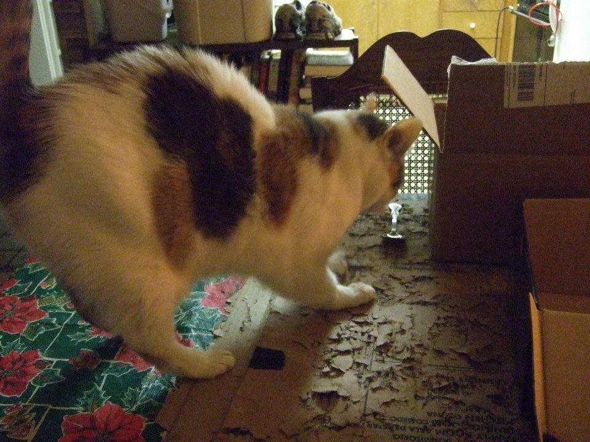
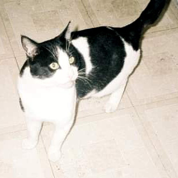

In a small town in Maine, a local feline named Hallie has become an overnight sensation after her hilarious reaction to catnip was caught on camera. According to eyewitnesses, Hallie's owner had just sprinkled some catnip on her scratching post when the normally mellow cat suddenly transformed into a wild and crazy creature. Hallie started meowing loudly and frantically scratching at the post, sending bits of fur flying everywhere. She then proceeded to run around the room, chasing imaginary mice and batting at invisible butterflies. The funniest part, however, came when Hallie tried to climb up the curtains, mistaking them for a giant cat tree. She ended up getting tangled in the fabric and falling to the floor, much to the amusement of her owner and everyone else in the room.

The video of Hallie's antics quickly went viral, with millions of people around the world sharing and commenting on the hilarious clip. Some even dubbed her the "Crazy Catnip Lady" and started creating memes and fan art in her honor. Unfortunately, the video is no longer available. We do not yet know the reason why. However, we were able to obtain this photo from the incident of Hallie frantically scratching a cardboard box.

In a quiet suburb of San Francisco, a local feline named Kito has been causing quite a stir after his wild reaction to catnip. According to Kito's owner, they had just sprinkled some catnip on the living room carpet when the normally mellow cat suddenly transformed into a wild maniac. Kito started to get a wild and crazy look on his face. He then started to run in circles around the living room, weaving in and out of furniture and getting increasingly disoriented. As Kito's frenzy intensified, he began to meow loudly, almost as if he was singing a song, while the wild and crazy look appeared on his face. The owner noted that it was a unique sound, like nothing they had heard from their cat before. It sounded like a bull moose pulling its foot out of the mud, they said. After what seemed like an eternity, Kito finally came down from his catnip-induced high and returned to his usual self. However, his owner will never forget the wild and crazy look on his face and the unforgettable sound of hissinging.